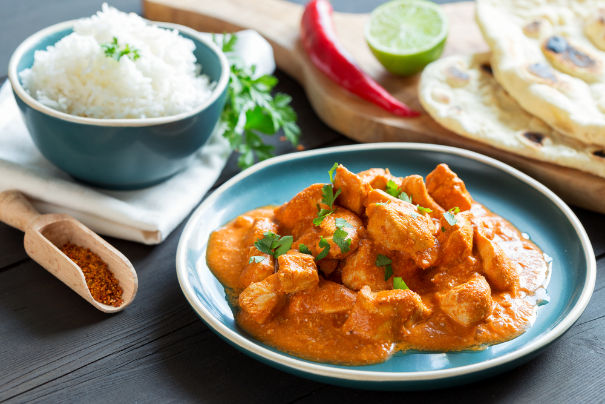

Butter Chicken

What is Butter Chicken
Butter chicken is a popular Indian dish that consists of tender pieces of chicken marinated in a spiced yogurt mixture.
The chicken is then cooked in a rich and creamy tomato-based sauce, which is flavored with various aromatic spices like garam masala, cumin, and fenugreek.
The dish is often garnished with fresh cilantro and served with naan bread or rice, creating a delicious and satisfying meal enjoyed by many around the world.
Ingredients
- 2 tablespoons peanut oil, divided
- 1 shallot, finely chopped
- ¼ white onion, chopped
- 2 tablespoons butter
- 1 tablespoon ginger garlic paste
- 2 teaspoons lemon juice
- 2 teaspoons garam masala, divided
- 1 teaspoon chili powder
- 1 teaspoon ground cumin
- 1 bay leaf
- 1 cup tomato puree
- 1 cup half-and-half
- ¼ cup plain yogurt
- 1 pinch salt and ground black pepper to taste
- 1 pound boneless, skinless chicken thighs, cut into bite-size pieces
- ¼ teaspoon cayenne pepper, or to taste
- 1 tablespoon cornstarch
- ¼ cup water
Steps
- Heat 1 tablespoon oil in a large saucepan over medium-high heat. Sauté shallot and onion until soft and translucent, about 5 minutes.

- Stir in butter, ginger-garlic paste, lemon juice, 1 teaspoon garam masala, chili powder, cumin, and bay leaf. Cook and stir for 1 minute. Add tomato sauce, and cook for 2 minutes, continuing to frequently stir.
:max_bytes(150000):strip_icc():format(webp)/45957-ChickenMakhaniIndianButterChicken-mfs-Step2-0017-48e3218ab32a46be85d3a8ad4a347233.jpg)
- Stir in half-and-half and yogurt. Reduce heat to low, and simmer for 10 minutes, frequently stirring. Season with salt and pepper. Remove from heat and set aside.
:max_bytes(150000):strip_icc():format(webp)/45957-ChickenMakhaniIndianButterChicken-mfs-Step3-0025-c994e98183444a8fb52860632cf9c1cb.jpg)
- Heat remaining 1 tablespoon oil in a large heavy skillet over medium heat. Cook chicken until lightly browned, about 10 minutes.
:max_bytes(150000):strip_icc():format(webp)/45957-ChickenMakhaniIndianButterChicken-Step4-0022-67d91823c76d40219d03ae51bc3ac576.jpg)
- Reduce heat, and season with remaining 1 teaspoon garam masala and cayenne. Stir in a few spoonfuls of sauce, and simmer until liquid has reduced, and chicken is no longer pink. Add cooked chicken into sauce and stir together.
:max_bytes(150000):strip_icc():format(webp)/45957-ChickenMakhaniIndianButterChicken-mfs-Step6-0030-194934e58e6b4815b80034ab94bccde0.jpg)
- Dissolve cornstarch into water, then mix into the sauce. Cook for 5 to 10 minutes, or until thickened.
:max_bytes(150000):strip_icc():format(webp)/45957-ChickenMakhaniIndianButterChicken-mfs-Step5-0026-24149cafdae948c4acf5ae7c0441b9b5.jpg)
- Serve over rice with naan.
:max_bytes(150000):strip_icc():format(webp)/45957-ChickenMakhaniIndianButterChicken-mfs-4X3-0037-7aa9a555bf3943baae20c5c3b0921375.jpg)
- Enjoy!